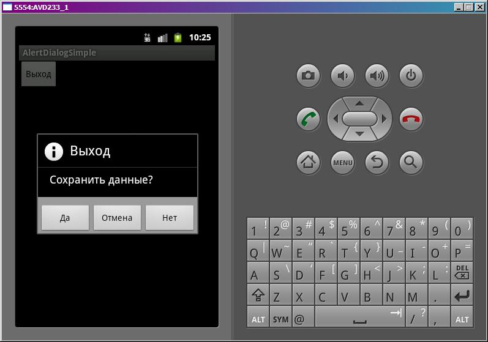
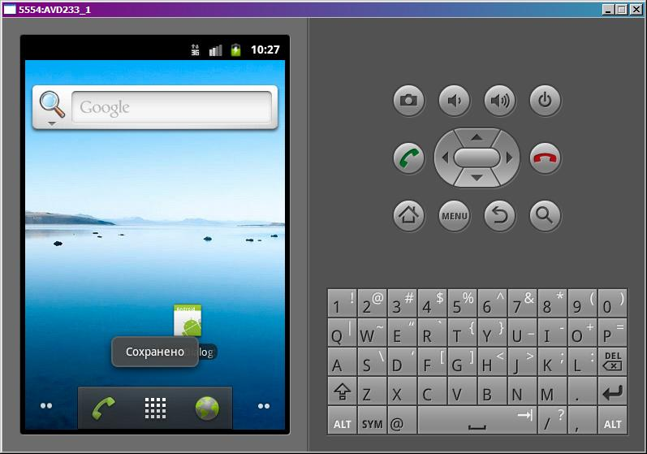

В этом уроке:
- создаем AlertDialog
- настраиваем заголовок, сообщение, картинку и кнопки
Начнем знакомство с AlertDialog. Этот диалог используется, если вы хотите сообщить о чем-то пользователю или попросить его сделать выбор типа Да/Нет/Отмена.
Напишем приложение, которое при закрытии будет вызывать диалог о сохранении данных, аналогичный диалогу из программ MS Office . Если мы ответим Да, то данные сохранятся, если Нет – то не сохранятся, если Отмена – приложение не закроется.
Создадим проект:
Project name: P0601_AlertDialogSimple
Build Target: Android 4.0
Application name: AlertDialogSimple
Package name: ru.startandroid.develop.p0601alertdialogsimple
Create Activity: MainActivity
Добавим в res/values/strings.xml строки c текстами:
<?xml version="1.0" encoding="utf-8"?>
<resources>
<string name="app_name">AlertDialogSimple</string>
<string name="exit">Выход</string>
<string name="save_data">Сохранить данные?</string>
<string name="yes">Да</string>
<string name="no">Нет</string>
<string name="cancel">Отмена</string>
<string name="saved">Сохранено</string>
</resources>Экран main.xml:
<?xml version="1.0" encoding="utf-8"?>
<LinearLayout
xmlns:android="http://schemas.android.com/apk/res/android"
android:layout_width="fill_parent"
android:layout_height="fill_parent"
android:orientation="vertical">
<Button
android:id="@+id/btnExit"
android:layout_width="wrap_content"
android:layout_height="wrap_content"
android:text="@string/exit"
android:onClick="onclick">
</Button>
</LinearLayout>Код MainActivity.java:
package ru.startandroid.develop.p0601alertdialogsimple;
import android.app.Activity;
import android.app.AlertDialog;
import android.app.Dialog;
import android.content.DialogInterface;
import android.content.DialogInterface.OnClickListener;
import android.os.Bundle;
import android.view.View;
import android.widget.Toast;
public class MainActivity extends Activity {
final int DIALOG_EXIT = 1;
/** Called when the activity is first created. */
public void onCreate(Bundle savedInstanceState) {
super.onCreate(savedInstanceState);
setContentView(R.layout.main);
}
public void onclick(View v) {
// вызываем диалог
showDialog(DIALOG_EXIT);
}
protected Dialog onCreateDialog(int id) {
if (id == DIALOG_EXIT) {
AlertDialog.Builder adb = new AlertDialog.Builder(this);
// заголовок
adb.setTitle(R.string.exit);
// сообщение
adb.setMessage(R.string.save_data);
// иконка
adb.setIcon(android.R.drawable.ic_dialog_info);
// кнопка положительного ответа
adb.setPositiveButton(R.string.yes, myClickListener);
// кнопка отрицательного ответа
adb.setNegativeButton(R.string.no, myClickListener);
// кнопка нейтрального ответа
adb.setNeutralButton(R.string.cancel, myClickListener);
// создаем диалог
return adb.create();
}
return super.onCreateDialog(id);
}
OnClickListener myClickListener = new OnClickListener() {
public void onClick(DialogInterface dialog, int which) {
switch (which) {
// положительная кнопка
case Dialog.BUTTON_POSITIVE:
saveData();
finish();
break;
// негативная кнопка
case Dialog.BUTTON_NEGATIVE:
finish();
break;
// нейтральная кнопка
case Dialog.BUTTON_NEUTRAL:
break;
}
}
};
void saveData() {
Toast.makeText(this, R.string.saved, Toast.LENGTH_SHORT).show();
}
}В обработчике кнопки onclick вызываем диалог.
В onCreateDialog мы создаем диалог. Для этого используется класс AlertDialog.Builder. Мы указываем заголовок, текст сообщения, иконку и кнопки. Диалог может содержать максимум три кнопки ответа: положительная, отрицательная и нейтральная. Для каждой указываем текст и обработчик. Метод create создает диалог и мы его возвращаем (return).
Обработчик кнопок myClickListener реализует интерфейс DialogInterface.OnClickListener и в нашем случае является общим для всех кнопок. В нем мы проверяем, какая кнопка была нажата:
если положительная (BUTTON_POSITIVE), то сохраняем данные и закрываем приложение
если отрицательная (BUTTON_NEGATIVE), то закрываем приложение без сохранения
если нейтральная (BUTTON_NEUTRAL), то не делаем ничего
В своем методе saveData выводим текст, что данные как-будто сохранены. Просто, чтобы убедиться, что метод выполняется.
Все сохраним и запустим приложение. Нажмем кнопку Выход:

если жмем Да,
то приложение закроется и метод saveData будет выполнен.

Если жмем Отмена, то диалог закроется и с приложением ничего не произойдет.
А если жмем Нет, то приложение закроется без вызова нашего метода saveData.
Вот так несложно и недолго создать диалог для взаимодействия с пользователем. Использованные нами атрибуты диалога не являются обязательными. Вы можете, например, не указывать заголовок, или сделать только одну кнопку, а не три.
Для указания заголовка, сообщения и текстов кнопок необязательно использовать переменные R.string. Есть аналогичные реализации методов, которые принимают на вход просто текст.
И еще пара советов.
1) Чтобы диалог вызывался не только по кнопке выход, но и при нажатии на кнопку Назад в приложении, добавьте вызов диалога в реализацию метода onBackPressed
public void onBackPressed() {
// вызываем диалог
showDialog(DIALOG_EXIT);
}2) А если хотите, чтобы вызванный диалог не закрывался по нажатию кнопки Назад, то используйте метод setCancelable:
adb.setCancelable(false);